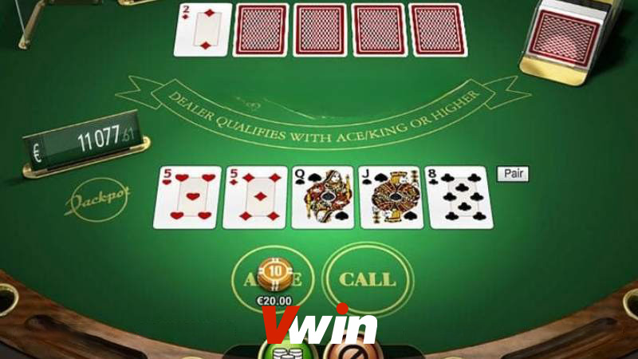
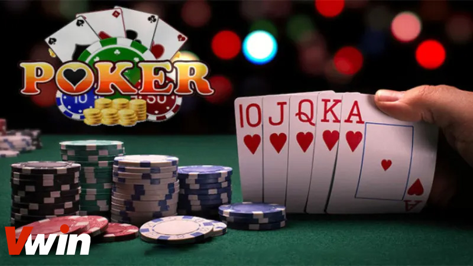

.png)
ĐÃ ĐĂNG TRÊN THÁNG BA 1, 2024 BỞI Vwin
Poker 5 lá không chỉ là một trò chơi phổ biến mà còn là một trò chơi mang tính chiến lược cao, đang thống trị ở các nền tảng poker trực tuyến và cả ngoại tuyến. Dù có luật chơi đơn giản, nhưng cách thức chơi poker 5 lá lại mang đến hàng loạt các tình huống khác nhau, tạo ra sự hứng thú và thách thức không ngừng cho người chơi. Trong bài viết này, Casino online Vwin sẽ hướng dẫn bạn hiểu rõ hơn về các khái niệm cơ bản và cách thức chơi poker 5 lá.
Trong cộng đồng người chơi poker, thuật ngữ poker 5 lá thường được biết đến với cái tên Five Card Draw. Đây là một biến thể của trò chơi Draw Poker, sử dụng một bộ bài gồm 52 lá. Trong trò chơi này, nhà cái đóng vai trò người điều khiển trò chơi và Dealer là người đại diện cho nhà cái.
Tìm hiểu poker 5 lá là gì?r
Nhiệm vụ của Dealer là chia bài cho các người chơi và điều khiển quá trình ván chơi. Mỗi người chơi sẽ nhận được 5 lá bài hoặc nhiều hơn, và trong suốt trận đấu, họ có thể thay đổi lá bài của mình nếu cảm thấy cơ hội thắng thấp, với mức tối đa là 5 lần đổi. Người chiến thắng được xác định bởi người có điểm số cao nhất trong mỗi ván chơi.
Trò chơi này thường được coi là một lựa chọn phù hợp cho những người mới bắt đầu tham gia vào thế giới của Poker tại các nhà cá. Luật chơi của trò chơi này được đánh giá là đơn giản hơn và có nhiều thể loại đa dạng hơn.
Trong khi những người muốn học hỏi và phát triển kỹ năng của mình trong Poker thường sẽ lựa chọn Draw Poker, nhưng Poker 5 lá vẫn là sự lựa chọn được ưa thích, đặc biệt đối với những người mới bắt đầu.
Cách chơi poker 5 lá
Poker 5 lá là một trò chơi phổ biến trong cộng đồng game thủ, trong trò chơi này, người chơi sẽ phải sử dụng 5 lá bài để tạo thành tay bài mạnh nhất và cố gắng chiến thắng các đối thủ. Để hiểu rõ hơn về cách chơi poker 5 lá, hãy theo dõi hướng dẫn dưới đây của Casino Vwin:
Đầu tiên, bạn cần chuẩn bị một bộ bài Tây gồm 52 lá bài để sử dụng trong trò chơi.
Mỗi trò chơi poker có những luật chơi cụ thể riêng biệt, và việc hiểu rõ các quy định này là chìa khóa để tham gia một cách hiệu quả. Trong phần này, chúng ta sẽ đi vào chi tiết về các quy tắc và luật lệ cụ thể của trò chơi poker, giúp bạn trở thành một người chơi thành thạo.
Vòng cược đầu tiên: Bắt đầu từ người chơi bên trái Dealer, mỗi người có thể:
Vòng cược thứ hai: Diễn ra tương tự như vòng cược đầu tiên.
Chiến thuật chơi Poker 5 lá bạn cần nắm
Trong mọi trò chơi, chiến thuật đóng vai trò quan trọng trong cách chơi poker và quyết định đến kết quả cuối cùng. Đối với Poker 5 lá, việc áp dụng các chiến thuật phù hợp có thể giúp bạn tăng cơ hội chiến thắng trong trận đấu. Dưới đây là một số chiến thuật mà bạn có thể sử dụng:
Dưới đây là tất cả các thông tin về cách chơi Poker 5 lá mà chúng tôi muốn chia sẻ với bạn. Hy vọng rằng những thông tin này sẽ hữu ích cho bạn trong việc khám phá và quyết định tham gia trò chơi. Nếu có bất kỳ câu hỏi nào, xin vui lòng liên hệ ngay với chúng tôi.
Vwin được công nhận là nhà cái cá cược hợp pháp - an toàn. Vwin còn có trụ sở chính và cá cược trực tiếp tại Phú Quốc.